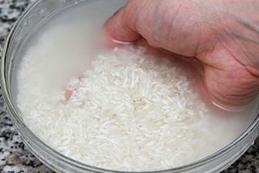
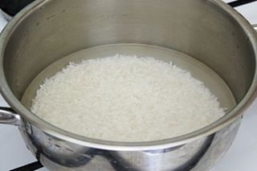
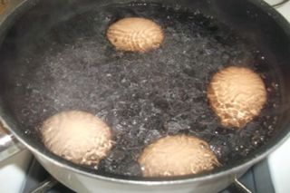
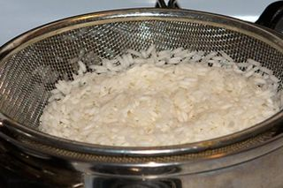
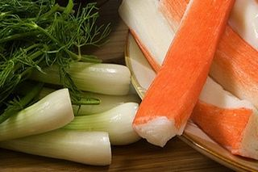
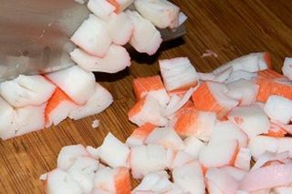
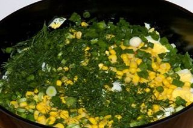
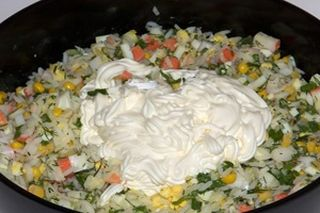

Шаг 1: подготавливаем рис.

В первую очередь выкладываем на кухонный стол рис, перебираем его, удаляя испорченные зерна и любой сор. После этого перекладываем его в глубокую миску, тщательно промываем под холодной проточной водой, скидываем в сито с мелкой сеткой и оставляем в нем на 5 – 7 минут, для того чтобы стекли излишки жидкости.
Шаг 2: варим рис.
Дальше наполняем небольшую кастрюлю нужным количеством очищенной воды и ставим ее на средний огонь. После закипания добавляем туда по вкусу соль, не забывая о том, что этот ингредиент будет еще использоваться во время заправки салата.

Теперь выкладываем в кипяток подсушенный рис и даем ему прокипеть пару минут. Затем уменьшаем температуру плиты до уровня между маленьким и средним. Тщательно перемешиваем зерна с водой, чтобы убедится в том, что они не прилипли ко дну кастрюльки, и варим их 15 – 20 минут.
Время приготовления может варьироваться в зависимости от сорта и качества риса, так что лучше проверять готовность на вкус - для салата важно, чтобы он не стал слишком мягким! Когда рис будет почти готов, с помощью кухонного полотенца переставляем кастрюльку с плиты на столешницу, накрываем ее крышкой и настаиваем зернышки в течение 10 – 15 минут.
Шаг 3: варим куриные яйца.

Тем временем кладем в чистую кастрюлю куриные яйца, заливаем их холодной проточной водой, добавляем туда пару столовых ложек соли, 9 % столового уксуса и ставим вариться на средний огонь.
После закипания готовим яйца вкрутую 10 – 12 минут. Затем перекладываем их в миску с ледяной водой и остужаем до комнатной температуры.
Шаг 4: подготавливаем отваренный рис и куриные яйца.

Пока варились яйца, рис слегка разбух, но он требует дополнительной подготовки. Перекладываем отваренные зерна в сито, тщательно промываем их под струей холодной воды и оставляем в нем на 10 – 12 минут или до того момента, когда стечет вся жидкость. После этого выкладываем рис в салатницу и полностью остужаем.
Дальше очищаем от скорлупы куриные яйца, смываем с них осколки, сушим бумажными кухонными полотенцами и кладем на тарелку.
Шаг 5: подготавливаем остальные продукты.

Теперь с помощью ключа для консервов открываем баночку с кукурузой и сливаем с нее маринад. Затем удаляем с крабовых палочек упаковку. Зеленый лук с укропом промываем и стряхиваем с них лишнюю воду. Также ставим на кухонный стол майонез и соль.
Шаг 6: доводим блюдо до полной готовности.

Все составляющие салата подготовлены, можно приступать к заключительному этапу. По очереди выкладываем на разделочную доску крабовые палочки, вареные яйца, зеленый лук и укроп.

Измельчаем эти продукты средними кубиками, а зелень мелко шинкуем и перекладываем нарезки в салатницу с отваренным рисом.

Туда же кладем кукурузу, майонез и по вкусу соль. Перемешиваем ингредиенты столовой ложкой до однородной консистенции, по желанию готовый салат охлаждаем или подаем его сразу.